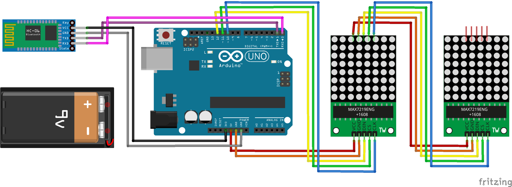
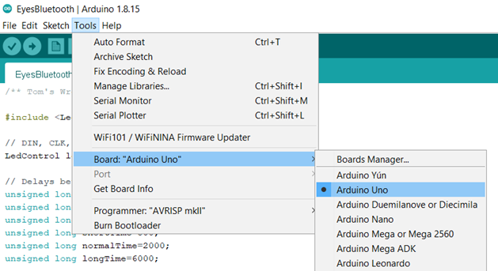
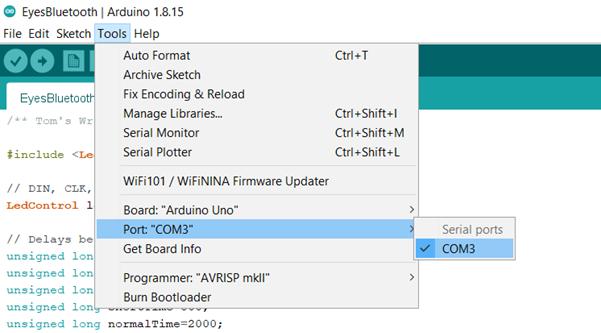
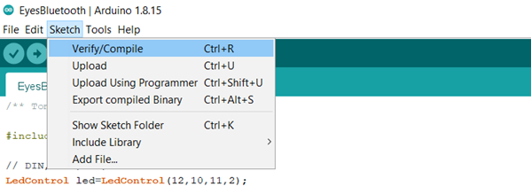
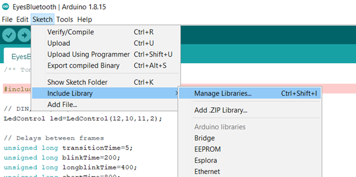
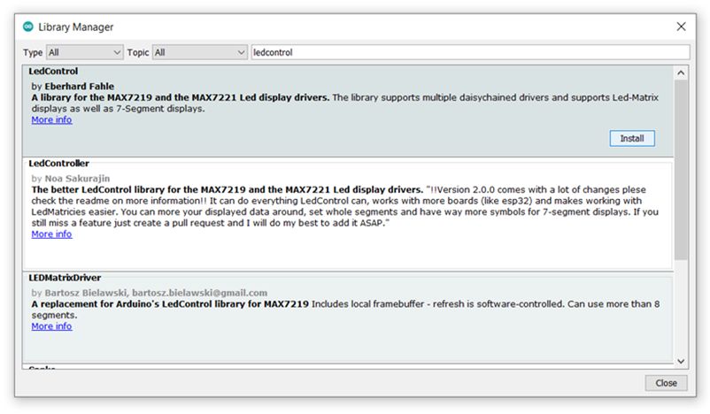
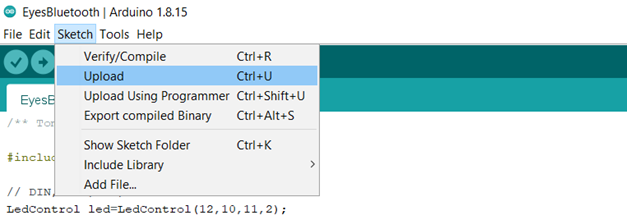
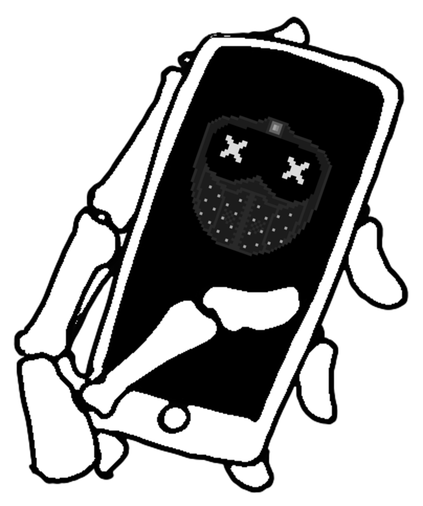

About
Wrench is one of the main characters from the game Watch Dogs 2 and I thought it would be a fun project to create a real version of his light up mask.

Although there are already some great tutorials out there, there's always room for improvement and so I built and coded my own mask using previous work for inspiration. The build took a year, but it turned out really well and so here I am documenting the results in a tutorial of my own!
This version:
- Is controlled wirelessly over bluetooth by a custom built Dedsec themed Android application
- Has 48 different set expressions with blinking and transition animations
- Also allows you to draw custom expressions, display messages and adjust speed and brightness
- Is portable and runs on a single, easily replaceable 9V battery
- Looks more like the in-game character than most other tutorials
Parts
Software
- Only needed if you wish to edit the Android app
- The app was developed in Android Studio 3.5.1
Code
Supplies

Plastic Wrench mask
- If you're in the UK, try searching "watch dogs mask" on Amazon

Black spray paint
- I used PlastiKote super gloss black spray paint
- You can use other paints but make sure you get one suitable for plastic

Metallic silver paint
- I used Rust-Oleum metallic silver furniture paint as I had some spare
- Normal acryclic paint works too

Fine paintbrushes
- The things normal people use for painting

Android device
- Can be either a phone or tablet
- Unfortunately the app is not compatible with iOS devices (blame Apple)

Arduino UNO
- Doesn't matter if it's genuiune or an unofficial clone board

USB A to USB B cable
- These cables are generic
- Often they'll send you one with the board

x2 white 8x8 LED matrix with MAX7219 module
- Note that the LED matrix is detachable from the module and is easy to swap
- For me it was cheaper to buy modules with red LEDs and buy two white LED matrices separately

HC-06 wireless bluetooth module
- HC-05 modules work too as they're basically the same but with more functionality

x14 male to female jumper wire
- Ideally you want at least 5 to be black as the ones between the eyes are slightly visible

9V battery holder with an on/off switch
- Get one with a connector lead that can fit into the Arduino's barrel jack
- It must have an on/off switch to control power to the Arduino

9V battery
- The battery will last a long time, but I recommend buying some spares just in case
- I tested AA batteries too, but 8 are required to provide a high enough voltage to power the LEDs which takes up a lot more space

Arduino UNO plastic case
- The colour doesn't matter since it'll be inside the mask

Black elastic strap
- Make sure its long enough to fit round the back of your head

Velcro strip
- This needs to be about the size of the battery pack

Black electric tape
- Use a tape designed insulate electrical wires

Liquid nails
- This stuff is pretty strong and will keep the parts in place inside the mask
- Can be purchased in black

Black paint
- I used this to paint the white liquid nails
Steps
Step 1 - Mask Preparation
The mask I used is a cheap "Watch Dogs" mask that you can find on Amazon or eBay. These are a pretty good immitation of the in-game one... but being cheap they're not perfect. If you're mask arrives misshapen, then its easy to bend the plastic by dunking it into a bowl of boiling water.
The paint job for the mask was awful so to fix this I spray painted the whole thing black, painted the spikes and bit at the top silver and added a clear gloss coating. To reduce the chance of the paint chipping, make sure you're using paint suitable for plastic.

Step 2 - LED Wiring
The first step to setting up the Arduino is to wire the LED matricies. The wire colours don't have to match, though I recommend using black wires between the matrices as they may be visible between the eyes.
For now don't add the bluetooth module. Maybe it was just my board but I discovered it caused a weird issue preventing me from uploading code to the board for the first time if this was connected.

Step 3 - Uploading Arduino Code
Code can be uploaded to the board using Arduino IDE. If you do not have this already, download the latest version from the official Arduino site. To download all required code in zip format, click the file below. You can also find these files on GitHub.
Extract the contents of the zip, locate the file under Bluetooth-Wrench-Mask-main ➔ Arduino ➔ BluetoothEyes.ino and click it to open the sketch in Arduino IDE. If this is your first time using the IDE, make sure to set the board type by going to Tools ➔ Board and selecting "Arduino Uno".

Now plug the USB cable into the Arduino to connect it to the computer.

Again if this is your first time using Arduino, You must also set the port of the board from Tools ➔ Port.
What do I do if the Port option is greyed out?
If this happens you first need to install the correct serial port driver for the device to be recognised. Which driver to install depends on the type of board you have:
- If you're using an official Arduino, you can configure the board to use the drivers pre-installed with Arduino IDE as shown in this driver installation guide.
- If you're a cheapskate like myself and you're using a clone board (an unofficial Arduino), you must instead install the driver from the board's manufacturer. Many clone boards commonly come with a CH340 chip, though if you're unsure you can check the inscription on the chip closest to the USB port as shown in the image below. If this is the case then it can be installed via this tutorial.


Check that the sketch compiles from Sketch ➔ Verify / Compile.

This will raise an error if you're missing the LedControl library. If this is the case, install the library and try compile the sketch again.
How do I install the LedControl library?
To install it, select Sketch ➔ Include Library ➔ Manage Libraries, then search for "LedControl" and press "Install".


Then upload the code to the board from Sketch ➔ Upload, or pressing Ctrl+U if using Windows or Cmd+U for Mac.

If it has worked correctly, the two LED matricies should light up and display X on each.
Technical Explaination of Code
The pre-set LED matrix eyes and alphabet are stored as binary arrays on the Arduino's memory. Each array is linked to a key value that represents the expression it is linked to. By default, the Arduino displays the X eyes when switched on as this has been set as "key1", though this can be changed at the top of the code.
Some expressions consist of multiple frames, such as a wink, while others consist of just one with a blinking animation in-between. The Arduino continuously monitors for a bluetooth signal to change the expression, though while no signal is received, the current expression will run on a loop.
Step 4 - Android App
The Arduino can be paired to an Android device such as a phone or tablet through the bluetooth receiver. This grants permission to send commands to the Ardiuno to change the values to display. Before pairing, make sure the Arduino is switched and that the bluetooth module is wired correctly.
How to pair to the Arduino will depend on what device you have, but in general this should be under Settings ➔ Bluetooth. If the name of the bluetooth module has not been changed, it will appear under its default name such as "HC-05".
To download the application, visit this site on the device and click the phone icon below. Note you may also have to go to Setting ➔ Security and check the option "Unknown sources" for this to work.
Once the app is installed, open it and you should see a list of all paired devices. Press on the one corresponding to the name of the bluetooth module and wait for the devices to connect. Now you should be able to change the LEDs to different expression by clicking buttons on the screen.
Step 5 - Attaching the Electronics
Now that you have tested that the code and electronics are working, the mask can be assembled.
To protect the Arduino and keep the electronics away from your face, the Arduino is housed in a plastic case. This can be attached in place below the LEDs using the liquid nails.
Unfortunately this means that you will have to remove the wires and wire it again in the same way to fit it into the case.